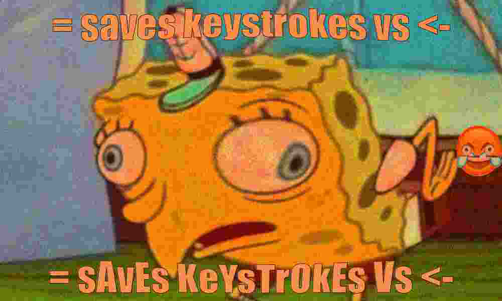

install.packages(c("magick", "extrafont", "remotes"))
remotes::install_version("Rttf2pt1", version = "1.3.8")tl;dr
Now you can use a function to deep fry memes in R.
Extra crispy
You can make memes in R with packages like Guangchang Yu’s {meme}. You could even post them to Twitter with #RStatsMemes for @rstatsmemes to find.
However, it’s no longer enough to present memes as-is. They must be deep-fried to become modern and ironic. It will help people think that your meme is so edgy that it’s been re-saved thousands of times.
Get to temperature
You’ll need image-manipulation wizardry from the {magick} package, along with {extrafont} to let you use fonts from your system.
At time of writing there is an issue with importing fonts, which requires an earlier version of {Rttf2pt1} to be installed.
You can then import fonts from your system.
extrafont::font_import()Importing fonts may take a few minutes, depending on the number of fonts and the speed of the system.
Continue? [y/n] Now we can use important joke fonts—like Impact, Papyrus or Calibri—in our memes, assuming they’re installed on your system.
Small fry
I’ve cooked up a single, low-quality function, fry(), that:
- Reads a meme template image (or any image) from a path
- Adds top/bottom text in Impact font
- Reads from a URL a specific (cursed) cry/laugh emoji that’s popular in deep-frying and places it in a random location (corners or left/right sides)
- Adjusts the image contrast, saturation, etc,1, tints it orange and bulges it from the centre
- Writes the image to a temporary jpeg file—compressing it horribly—and then reads it back in
- Outputs a
magick-imageobject that you can save withmagick::image_write()and send to all your friend (sic)
It does what I want it to do; adjust it as you please.
suppressPackageStartupMessages(library(magick))
fry <- function(
img_path, emoji_path,
text_top, text_bottom,
depth = c("shallow", "deep")) {
depth <- match.arg(depth)
cat("Heating oil... ")
emoji <- magick::image_read(emoji_path)
emoji_where <- sample(c(
paste0("north", c("east", "west")),
paste0("south", c("east", "west")),
"east", "west" # e.g. 'east' is right
), 1)
img <- image_read(img_path) |>
image_annotate(
text_top, "north", size = 80, font = "Impact",
color = "white", strokecolor = "black"
) |>
image_annotate(
text_bottom, "south", size = 80, font = "Impact",
color = "white", strokecolor = "black"
) |>
image_scale("1000") |>
image_composite(emoji, gravity = emoji_where) |>
image_colorize(30, "orange") |> # tint
image_modulate(brightness = 80, saturation = 120, hue = 90) |>
image_contrast(sharpen = 100) |>
image_noise()
cat("dunking meme... ")
if (depth == "shallow") {
img <- img %>% image_implode(-0.5) # bulge
compress <- 8
} else if (depth == "deep") {
img <- img %>% image_implode(-1) # more bulge
compress <- 1 # maximum compression
}
path_out <- tempfile("meme", fileext = ".jpeg")
image_write(img, path_out, "jpeg", compress)
cat("crisp.")
image_read(path_out)
}Get cooking
What spicy meme shall I make? Well, the = versus <- assignment-operator flamewar has been cold for a few days, so time to heat it up again.2 And why not incorporate the world’s most famous fry cook (in sarcastic form)?
sponge_path <- paste0( # URL to meme image
"https://raw.githubusercontent.com/matt-dray/rostrum-blog/",
"master/static/post/2021-11-07-deepfry_files/spongebob.jpg"
)
emoji_path <- paste0( # URL to cry/laugh emoji
"https://raw.githubusercontent.com/matt-dray/rostrum-blog/",
"master/static/post/2021-11-07-deepfry_files/deepfry-emoji.jpg"
)
bot_txt <- "= sAvEs KeYsTrOkEs Vs <-" # sarcastic text
top_txt <- tolower(bot_txt)First, a nice shallow fry.
fry(sponge_path, emoji_path, top_txt, bot_txt, "shallow")Heating oil... dunking meme... crisp.
And now we deep fry.
fry(sponge_path, emoji_path, top_txt, bot_txt, "deep")Heating oil... dunking meme... crisp.*Fry-cook’s kiss*
Environment
Session info
Last rendered: 2023-07-17 18:25:54 BSTR version 4.3.1 (2023-06-16)
Platform: aarch64-apple-darwin20 (64-bit)
Running under: macOS Ventura 13.2.1
Matrix products: default
BLAS: /Library/Frameworks/R.framework/Versions/4.3-arm64/Resources/lib/libRblas.0.dylib
LAPACK: /Library/Frameworks/R.framework/Versions/4.3-arm64/Resources/lib/libRlapack.dylib; LAPACK version 3.11.0
locale:
[1] en_US.UTF-8/en_US.UTF-8/en_US.UTF-8/C/en_US.UTF-8/en_US.UTF-8
time zone: Europe/London
tzcode source: internal
attached base packages:
[1] stats graphics grDevices utils datasets methods base
other attached packages:
[1] magick_2.7.4
loaded via a namespace (and not attached):
[1] digest_0.6.31 fastmap_1.1.1 xfun_0.39 magrittr_2.0.3
[5] knitr_1.43.1 htmltools_0.5.5 png_0.1-8 rmarkdown_2.23
[9] cli_3.6.1 compiler_4.3.1 rstudioapi_0.15.0 tools_4.3.1
[13] curl_5.0.1 evaluate_0.21 Rcpp_1.0.11 yaml_2.3.7
[17] rlang_1.1.1 jsonlite_1.8.7 htmlwidgets_1.6.2Reuse
CC BY-NC-SA 4.0